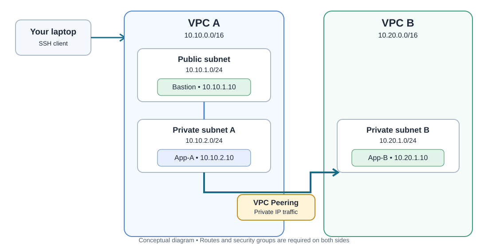

Project overview
This project follows the EWB Cloud Labs student workbook. It uses two non-overlapping VPCs and one bastion host for administration. The application instances remain private.
VPC A
Public bastion + private App-A
10.10.0.0/16Public bastion + private App-A
VPC B
Private App-B; no Internet Gateway
10.20.0.0/16Private App-B; no Internet Gateway
Private linkVPC Peering
Routes required on both sides
Routes required on both sides
SecurityRestricted SSH and ICMP
No public IPs on app instances
No public IPs on app instances
Conceptual architecture
Diagram is illustrative. The actual deployment must be verified in your own AWS account.

Address plan
Public subnet A
Bastion:
10.10.1.0/24Bastion:
10.10.1.10Private subnet A
App-A:
10.10.2.0/24App-A:
10.10.2.10Private subnet B
App-B:
10.20.1.0/24App-B:
10.20.1.10Validation checklist
- Capture failed App-A → App-B ping before peering routes.
- Capture successful forward and reverse ping after routes and security rules.
- SSH to App-B through the bastion.
- Temporarily remove the App-B inbound ICMP rule, record the failure, then restore it and prove recovery.
- Confirm App-A and App-B have no public IPv4 addresses.
Safety: Do not publish AWS credentials, passwords, session tokens, or private SSH keys. Check AWS charges and clean up lab resources after saving evidence.
Project status
This site documents the intended design. Update this section only after you have run the tests:
- AWS deployment: Not yet verified
- Connectivity tests: Pending real AWS output
- Resource IDs and evidence: To be added by student